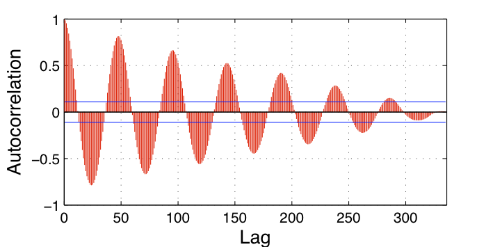

We will update this website soon. You can find more information in the publication "Liang Wang, Jussi Kangasharju, Measuring Large-Scale Distributed Systems: Case of BitTorrent Mainline DHT, in Proceedings of IEEE Conference on Peer-to-Peer Computing, Trento, Italy, September 2013."
For any further questions, please contact Liang Wang.
You can find the python code for the core components of our monitoring system as follows.
The conclusion in our work and implication from BitTorrent measurement project has significant impact on our understanding of BitTorrent system, even though this topic has been intensively studies for over a decade.
Not like many people originally thought that BitTorrent is declining, our measurement shows BitTorrent is going strong. Concerning the actual number of nodes in the system, our results show that the number varies between 15 and 27 million per day with a very clear daily churn pattern. European users dominate both in terms of number of users and over the course of the past 30 months of our study we have seen that the number of users increased by about 10% from 2011 to 2012, but has remained stable since then.
The wrong image that the public had on BitTorrent is partly due to the fact that academia failed to provide a sound measurement on this arguably the largest active overlay in the world. In the project, we first identify a systematic error in previous works measuring the number of nodes in DHT-based BitTorrent networks (e.g., Mainline DHT, KAD, Vuze) and present the cause behind it, which is missing node issue. We then develop an efficient and accurate methodology called Correction Factor for measuring the size of Mainline DHT. Our methodology gives an accurate estimate of the system size in seconds. The methodology is based on modeling the inaccuracies of the crawling as a Bernoulli process.
Later in the project, we considered vulnerabilities in BitTorrent Mainline DHT and have found out that not only is it very vulnerable to simple attacks, but also that attack-like activities are happening on a wide scale. We have identified two routing table attacks, horizontal attack and vertical attack, and discussed their potential damages. Through an extensive measurement study since December 2010, we have identified that both of these attacks are happening in the real network. We have analyzed their exact behavior through honeypots and have shown the scale of the on-going activities. We must stress that we have no concrete proof of actual malicious activities; our work only shows that the scale of attacks is large enough for this to be a concern.
The effects of real-world events can be clearly reflected in BitTorrent System. We took a closer look at the network size during large holidays, like Christmas (December 24–26, 2010) and the Chinese New Year (February 3, 2011), and local disasters like the March 11, 2011 Japan earthquake.
During Christmas we observed a clear drop in the number of European users starting from Christmas Eve and continuing until the end of Christmas. We saw a total drop of about 1 million users spread across Europe. Interestingly, the number of users in China at the same time went up by about 10%, but descended back to its usual level after Christmas.
During the Chinese New Year, the number of users in China dropped by about 10% and we saw similar numbers in many other Asian countries. In Europe and US this event caused no change in the usage patterns.
Figure on the right shows the number of Japanese users between March 8 and March 14. The day of the earthquake, March 11, shows a significant drop in the number of users, but within about 24 hours the number of users had recovered to almost normal levels and after about a week had returned to more or less normal. In retrospect, this is not so surprising, since most of the Japanese population lives away from the worst affected areas so there are no “network” reasons for a change in behavior.
Figure blow shows the network evolution in different geo-region, and the CDF of session length in MLDHT for the whole network (“SYS”) and some selected countries. We can see that Korean and US nodes are more likely to have longer session length, whereas Chinese users have typically shorter than average sessions. Generally, about 50% of the nodes have session length less then 200 minutes, while 3% have session length longer than 9000 minutes.
Our session length data can be approximated with an exponential function and a better fit is obtained with the sum of two exponential functions. Thus, it appears that the session lengths in MLDHT are exponentially distributed. The fit is shown in figure. We used the trust-region algorithm in Matlab to perform a Nonlinear Least Squares Regression fit to obtain these curves.
We also looked at the changes in number of users in different countries between 2011 and 2012. Note that since we only have data for 9 months in 2012 at the time of writing, these are not the final numbers, but they can be considered to show the trend. Figure one (in pink) shows the changes as a percentage and Figure two (in blue) shows the absolute numbers.
In the overall system, there is a very clear seasonal trend where the activity peaks in the Spring and is at its lowest in the Summer. Interestingly, weekends are much busier during Fall, Winter, and Spring, whereas during Summer there is no marked difference between weekends and weekdays. However, we observed that this pattern was very much country-specific. For example, in the US and Korea, there was no observable difference between weekends and weekdays at any time during the year, whereas European countries exhibited the behavior shown in Figure.
In order to analyze the number of users in the system, we took samples from March 2011 and 2012 and calculated their autocorrelations. These are shown in Figure 10, separately for both months. We take the first week in March of the both 2011 and 2012 (same as in Figure 7), then we calculate autocorrelation on each of them respectively. The most striking discovery is that the autocorrelation is practically identical for the two months, even though the average number of users has gone up by almost 3 million. However, since autocorrelation measures the similarity of a sequence to itself as a function of time separation, this simply implies that even though the number of users has increased, the behavior of users is statistically “identical”. In other words, this might suggest that there may be a typical behavioral pattern of a MLDHT user; alternatively, a large number of automated bots as users could also explain this phenomenon. Further studies would be needed to ascertain the reasons behind this

Due to the size of the datasets, we only provide a sample dataset [HERE]. More data can be requested by contacting Liang Wang.
To use our dataset, please refer to our paper "Measuring Large-Scale Distributed Systems: Case of BitTorrent Mainline DHT, IEEE P2P 2013, Turin, Italy"